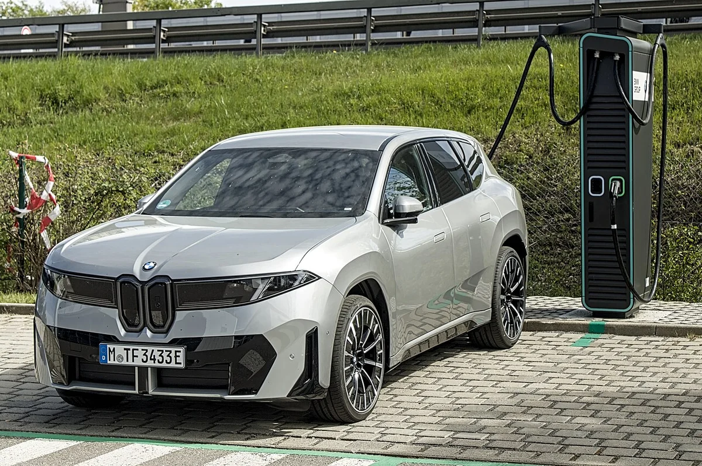
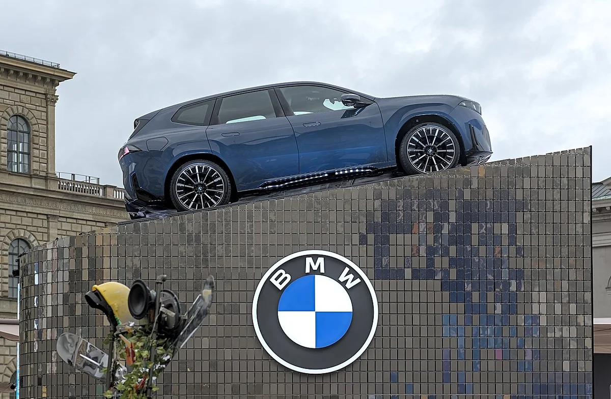
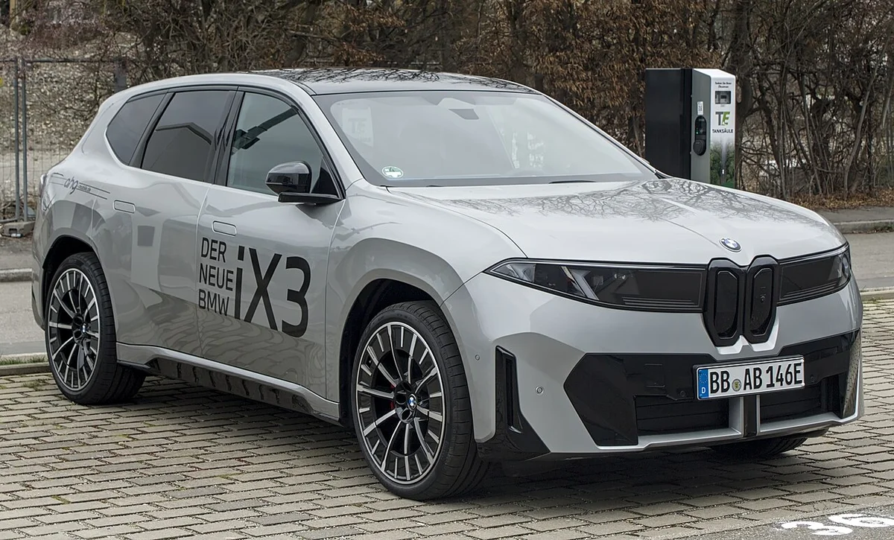
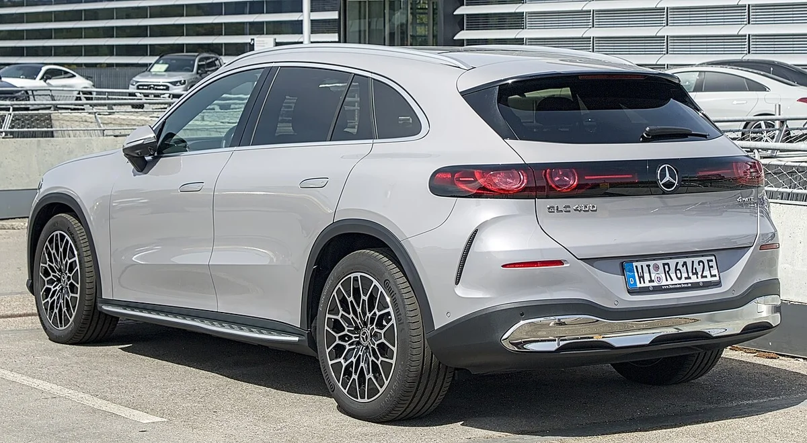
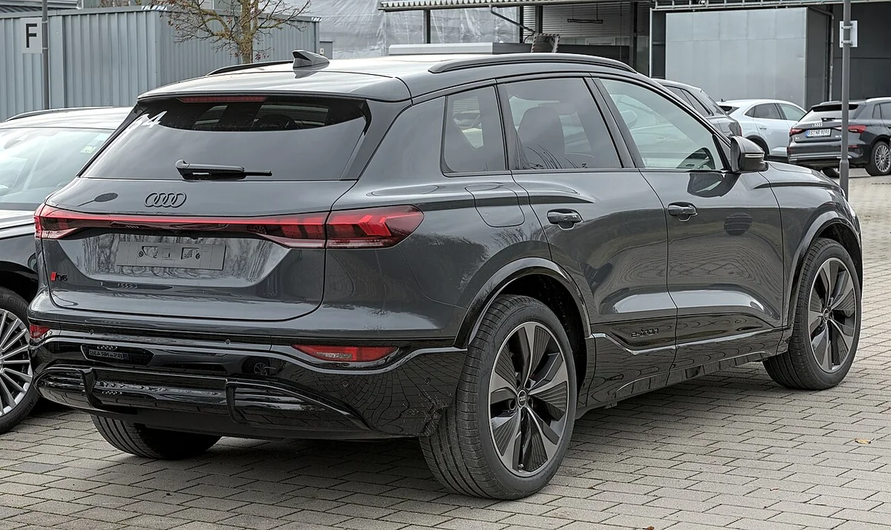
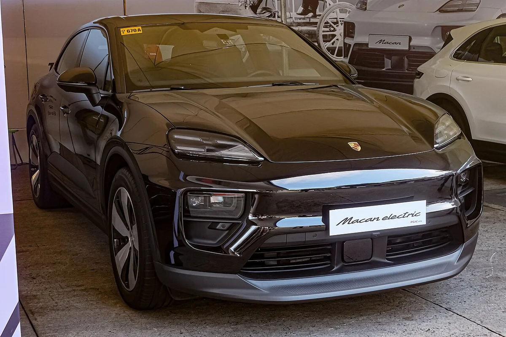
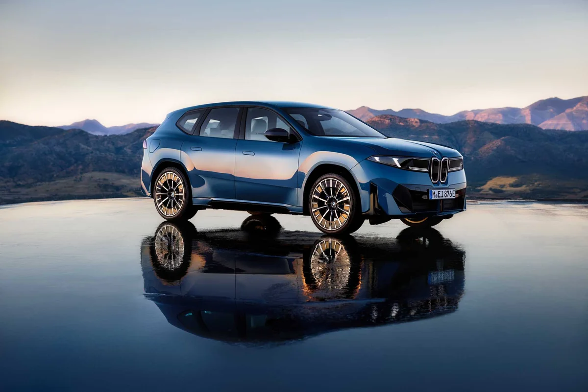
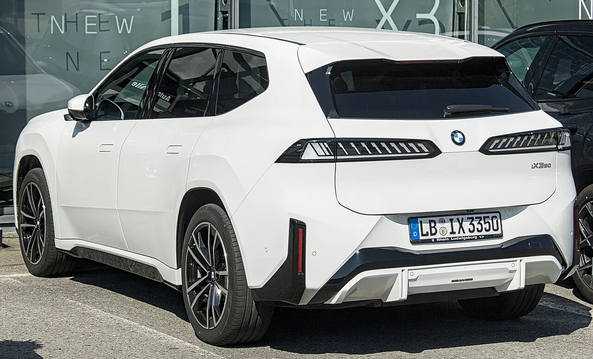

▲ 충전기 옆의 BMW iX3 전측면. 독일에서 촬영된 유럽 사양 차량이다 ⓒ Alexander Migl, Wikimedia Commons (CC BY-SA 4.0)
"출시 한 달 만에 1,101대"라는 제목을 보면, 미국에서 9월 한 달 동안 BMW iX3가 1,101대 팔린 것처럼 읽힌다. 하지만 이 글이 확인한 근거로는 1,101대는 3분기(7~9월) 합계로 보도됐고, 실제 인도는 9월 중순에 시작됐다. 지피코리아(2026년 10월 20일 보도)가 전한 내용을 BMW 북미법인 자료와 미국 매체 보도로 다시 대조했다.
결론부터 말하면 1,101대 자체는 미국 시장조사기관 콕스 오토모티브(Cox Automotive)의 켈리 블루 북 전기차 판매 보고서(2026년 10월 12일 기준 추정치)에 실린 숫자이고, BMW가 직접 모델별 판매량을 공개한 것은 아니다. 비교 모델 수치 중 아우디 Q6 e-트론은 콕스 추정과 아우디 공식 판매표가 서로 다르다. 어디까지 확인됐고 어디부터 보도에 기댄 숫자인지를 나눠서 정리한다.
1. 1,101대는 '한 달'이 아니라 3분기 숫자다
지피코리아는 콕스 오토모티브 자료를 인용해 BMW가 2026년 3분기에 iX3를 1,101대 팔았다고 전했다. 같은 기사는 고객 인도가 9월에 시작됐다는 점을 들어 짧은 기간의 성과라고 평가했다. 그래서 제목의 "출시 한 달"은 정확한 집계 기간이 아니라, 인도가 9월 중순에 시작된 신차의 첫 성과를 압축한 표현에 가깝다. 콕스 보고서 PDF에는 2026년 10월 12일 기준 추정치라는 표기가 있다.
BMW 북미법인의 3분기 판매 보도자료는 미국 3분기 총판매를 10만 210대(전년 동기 대비 3.4% 증가)로 적고, 전기·플러그인 합계는 24.9% 줄었다고 밝혔다. BMW블로그가 정리한 이 자료 요약에는 BMW 전기차(BEV) 모델별 대수가 없었고, 이는 BMW가 iX3 대수를 따로 밝히지 않았다는 뜻이다(BMW 보도자료 원문은 직접 열지 못했다). 즉 1,101대는 BMW 자료가 아니라 외부 집계에서 나온 숫자다.
| 항목 | 확인 상태 | 근거 |
|---|---|---|
| 1,101대 숫자 | 콕스 추정치(원문 PDF 확인) | 콕스 켈리 블루 북 전기차 판매 보고서, 지피코리아 2026.10.20 |
| 집계 기간 | 3분기(7~9월) 합계 | 콕스 보고서 표(3분기·올해 누계 모두 1,101대) |
| BMW 공식 모델별 대수 | 확인 못 함 | BMW 3분기 보도자료에 iX3 대수 없음 |
| 인도 시작일 | 9월 16일(딜러 공지 보도) | 일렉트렉 2026.9.18 |
| 콕스 원문 PDF의 iX3 행 | 직접 확인함 | BMW iX3 3분기 1,101대, 전년 같은 분기 판매 없음, 비중 0.4% |

▲ 전시대 위에 놓인 BMW iX3(노이어 클라쎄). 2025년 9월 뮌헨 IAA 현장에서 촬영된 사진이다 ⓒ Alexander Migl, Wikimedia Commons (CC BY-SA 4.0)
2. 미국 출시일과 인도 시작: 9월 25일에서 9월 16일로
BMW 북미법인은 2026년 5월 7일 보도자료에서 2027년형 iX3 50 xDrive의 미국 출시를 9월 25일로 발표했다. 같은 자료에 따르면 bmwusa.com에서 1,000달러 보증금으로 예약을 받았다. 이 일정은 BMW 공식 자료로 확인했다.
그런데 일렉트렉은 9월 18일 기사에서 BMW가 딜러에게 9월 16일부터 판매·인도가 가능하다고 알렸다는 딜러 게시글을 전했다. 이 날짜는 딜러 공지를 옮긴 것이어서 BMW의 공식 확인은 찾지 못했다. BMW블로그도 인도가 3분기에 약 2주간만 반영됐을 것이라고 추정했는데, 이는 기자의 추정이지 BMW 수치가 아니다.
9월 16일을 인도 시작일로 두면 3분기 안에서 판매 가능했던 기간은 약 15일이다. 1,101대를 15일로 단순히 나누면 하루 70여 대인데, 3분기 이전에 인도된 차량이 없었는지도 확인된 것이 아니므로 이 계산은 참고용 어림값으로만 읽어야 한다(카프리즘 계산).

▲ 'DER NEUE BMW iX3' 표시가 붙은 은색 iX3의 전측면. 독일에서 촬영된 유럽 사양 차량이라 번호판이 독일식이다 ⓒ Alexander Migl, Wikimedia Commons (CC BY-SA 4.0)
3. 벤츠·아우디를 제쳤다는 비교, 숫자가 맞는가
오토블로그는 콕스 집계 기준으로 iX3가 포르쉐 마칸 일렉트릭 1,023대, 아우디 Q6 e-트론 810대, 메르세데스 GLC 일렉트릭 341대보다 많이 팔렸다고 전했다. 오토블로그 원문은 접속이 막혀 열지 못했지만, 같은 수치를 콕스 보고서 PDF의 모델별 표에서 직접 확인했다(마칸 1,023대, Q6 e-트론 810대, GLC 341대). 지피코리아 기사는 같은 비교를 "포르쉐·아우디·볼보·메르세데스-벤츠 전기 SUV보다 많다"고만 적고 개별 수치는 적지 않았다.
문제는 아우디 쪽 숫자다. 아우디 미국법인의 3분기 판매표(미국 매체 오토에볼루션 보도로 확인)는 Q6 e-트론을 619대로 적었고 전년 같은 분기는 1만 59대였다. 반면 콕스 표는 810대와 전년 1만 299대다. 콕스 표 맨 위에 "Estimates(추정치)"라고 적혀 있어, 810대는 추산한 값이고 619대는 아우디 자체 집계로 보는 것이 맞다. 두 숫자의 차이(2026년 191대, 2025년 240대)가 두 해 모두 비슷하게 콕스 쪽이 큰 점으로 볼 때 변종(스포트백·SQ6) 포함 여부 같은 집계 범위 차이일 가능성이 있으나, 이는 추정이며 원인은 확인하지 못했다. 포르쉐도 비슷하다. 포르쉐 미국법인 공식 자료는 마칸을 내연기관·전기 합산으로만 발표하고 타이칸을 537대로 적었는데, 콕스는 타이칸을 498대로 추정했다. 따라서 콕스 수치는 공식 판매량이 아니라 추정치로 읽어야 한다. 어느 쪽 숫자를 써도 iX3(1,101대)가 앞서지만, "얼마나 앞섰는가"는 단정할 수 없다.
| 모델 | 판매량 | 출처·상태 |
|---|---|---|
| BMW iX3 | 1,101 | 콕스 추정치(원문 PDF 확인) |
| 포르쉐 마칸 일렉트릭 | 1,023 | 콕스 추정치(포르쉐는 전기 마칸 대수 미공개) |
| 아우디 Q6 e-트론 | 810 / 619 | 콕스 추정치 / 아우디 판매표(오토에볼루션 인용). 불일치 |
| 메르세데스 GLC 일렉트릭 | 341 | 콕스 추정치(메르세데스 미국법인은 전기 GLC 대수 미공개) |

▲ 메르세데스-벤츠 GLC with EQ Technology 후측면. 독일에서 촬영된 유럽 사양 차량이다 ⓒ Alexander Migl, Wikimedia Commons (CC BY-SA 4.0)

▲ 아우디 Q6 e-트론 후측면. 2024년 11월에 촬영된 사진이다 ⓒ Alexander-93, Wikimedia Commons (CC BY-SA 4.0)
4. 숫자의 맥락: 전기차 시장은 줄었고 BMW 전기차도 줄었다
켈리 블루 북(콕스)은 2026년 3분기 미국 전기차 판매를 26만 2,649대로 추정했고, 전분기 대비 6.1% 늘었지만 전년 동기보다 39.5% 줄었다. 전기차 비중은 신차의 약 6.4%다. 미국의 7,500달러 연방 전기차 세액공제가 2025년 3분기까지였다는 점이 아우디 전기차 급감의 배경으로 미국 매체 보도에 언급됐다.
BMW 북미법인 3분기 전체 판매는 늘었지만, 전기·플러그인 합계는 24.9% 줄었다. 모델별로는 iX가 3,136대에서 121대로 96.1% 감소했다. 콕스 보고서 표에서는 이 분기 BMW 전기차 가운데 i4(2,539대)만 iX3보다 많이 팔렸고 i5는 720대, i7은 464대였다(지피코리아 보도와 일치, 콕스 추정치). 콕스는 BMW 전기차 합계를 4,945대로 추정했고 전년 동기 1만 294대보다 52.0% 적다. iX의 121대는 BMW블로그가 전한 전년 3,136대 대비 감소와 일치한다. 한편 3시리즈 판매 급증이 BMW 3분기 실적을 이끈 구조는 BMW 3시리즈 미국 판매 분석 기사에서 확인할 수 있다.
그래서 "벤츠·아우디를 제쳤다"는 표현은 전기차 시장이 전반적으로 침체한 가운데, 인도가 막 시작된 신차가 이미 판매 중이던 경쟁 모델을 앞섰다는 뜻으로 읽는 편이 정확하다. 신차 효과(예약 고객 일시 인도)가 반영됐을 가능성이 있어, 4분기 이후 수치를 봐야 안정적인 판매량을 알 수 있다. 미국 전기차 시장 흐름은 GM·스텔란티스 3분기 미국 전기차 판매 기사에서도 다뤘다.

▲ 포르쉐 마칸 일렉트릭 전면. 2025년 10월에 촬영된 사진이다 ⓒ Ethan Llamas, Wikimedia Commons (CC BY-SA 4.0)
5. 미국 가격: 6만 1,500달러부터, 한국 7,990만 원과 비교하면
BMW 북미법인 공식 자료로 2027년형 iX3 50 xDrive의 미국 기본가(MSRP)는 6만 1,500달러이고, 운송·취급 비용 1,350달러가 따로 붙는다. EPA 추정 주행거리는 20인치 서머 타이어 선택(무상 옵션) 시 최대 434마일(약 698km), 기본 20인치 사계절 타이어는 383마일, 21·22인치는 392~399마일이다(BMW 북미법인 2026년 5월 7일 보도자료 확인). 일렉트렉은 트림별 가격을 6만 1,500달러(스포츠), 6만 4,000달러(M 스포츠), 6만 5,500달러(M 스포츠 프로)로 전했지만 이 트림 가격은 BMW 자료에서 직접 확인하지 못했다.
| 항목 | 한국 | 미국 |
|---|---|---|
| 공식 출시일 | 2026년 6월 18일(BMW 코리아 보도자료 목록 날짜), 사전예약 3월 19일 | 9월 25일 발표, 인도는 9월 16일 시작 보도 |
| 시작 가격 | SE 7,990만 원(국내 매체가 BMW 코리아 발표를 인용, 부가세 포함·개별소비세 3.5% 기준. 공식 가격표 원문은 열지 못함) | $61,500 + 운송료 $1,350(BMW 공식) |
| 주행거리 | 국내 인증 최대 611km(보도) | EPA 최대 434마일(약 698km) |
한국과 미국의 주행거리는 인증 방식이 달라 직접 비교할 수 없고, 달러 가격을 환율로 곱한 값도 세금·관세·옵션 구성이 달라 의미 있는 비교가 아니다. 한국 쪽 가격표와 트림은 BMW iX3 국내 출시 기사에서 정리했다. 미국 가격 정보는 BMW 북미법인 보도자료에서 볼 수 있다. BMW 북미법인 보도자료 바로가기

▲ BMW iX3 50 xDrive 전측면. 유럽 사양 홍보 사진이라 미국 사양과 세부가 다를 수 있다 ⓒ BMW 공식 프레스룸(BMW 북미법인 보도자료 첨부 사진, 사용자 책임)
6. 이 숫자를 믿고 판단하기 전에 확인할 것
확인 체크포인트
- 기간: 1,101대는 3분기 합계이며 9월 단월이나 "출시 30일"로 단정할 수 없다
- 출처: BMW가 직접 공개한 모델별 대수가 아니라 콕스의 추정치다. 콕스 원문 표에서 1,101대를 직접 확인했다
- 비교 모델: 아우디 Q6 e-트론은 810대(콕스 추정)와 619대(아우디 판매표) 두 숫자가 있다
- 신차 효과: 예약 고객 인도가 몰렸을 수 있어 4분기 이후 수치로 다시 판단해야 한다
- 미국 사양: 이 글의 사진은 모두 유럽 등에서 촬영된 차량이며 미국 사양이 아니다
한국 시장에서의 iX3 계약·번호판 추이는 BMW 코리아 10월 온라인 한정 에디션 기사의 관련 글에서 이어서 볼 수 있다. 보도의 원문은 지피코리아에서 확인할 수 있다. 지피코리아 원 기사 바로가기

▲ 흰색 BMW iX3 후측면. 가로형 테일램프 디자인이 특징이다 ⓒ Alexander Migl, Wikimedia Commons (CC BY-SA 4.0)
7. 이 글이 확인하지 못한 것
- BMW 북미법인 3분기 보도자료 원문: BMW블로그 등 요약으로만 확인했다
- 오토블로그 원문: 접속이 막혀 열지 못했다(수치는 콕스 PDF로 대체 확인)
- 아우디 Q6 e-트론 810대와 619대의 차이 원인: 콕스는 추정치, 아우디는 자체 집계라는 점까지만 확인했다
- iX3 인도 시작일(9월 16일)의 BMW 공식 확인: 딜러 공지 보도만 확인했다
- 한국 가격표 공식 대조: BMW 코리아 공식 가격표 원문은 열지 못했고, 아시아경제 등 보도로 대신 확인했다
8. 요약
BMW iX3의 미국 판매 1,101대는 콕스 오토모티브 추정치(원문 확인)이며, 기간은 "출시 한 달"이 아니라 3분기(7~9월) 합계다. 인도는 당초 9월 25일에서 9월 16일로 앞당겨졌다는 딜러 공지 보도가 있고, BMW 공식 자료에는 모델별 대수가 없다.
포르쉐 마칸 일렉트릭 1,023대, 아우디 Q6 e-트론 810대, 메르세데스 GLC 일렉트릭 341대보다 앞섰다는 비교도 콕스 추정치 기준이며, 아우디 자체 판매표는 Q6를 619대로 적어 어긋난다. 미국 가격은 6만 1,500달러부터(운송료 별도)로 BMW 공식 확인이다.